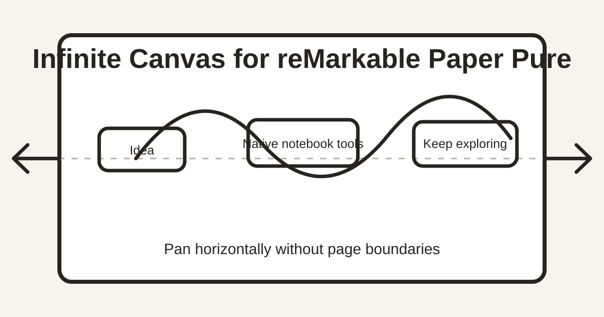

Free and open source
Infinite canvas for reMarkable Paper Pure
Pan horizontally beyond notebook page edges while keeping the native reMarkable toolbar, pens, eraser, selection, layers, undo/redo, notebook storage, and cloud sync.

What it changes
Native writing
This is not a separate drawing app. It uses the stock notebook editor and native ink pipeline.
No horizontal boundary
Two-finger panning continues beyond the original notebook width without creating another page.
Per-notebook control
Choose a global default, then override individual notebooks as infinite or normally paged.
Compatibility
Currently tested only on reMarkable Paper Pure software 3.28.0.172. The installer rejects unsupported devices and firmware.
Does reMarkable have an infinite canvas?
The stock Paper Pure notebook editor does not provide an all-direction infinite canvas. This project adds native horizontal expansion for handwritten notebooks. Marks outside the original width survive editor restarts and tablet reboots.
Is it safe?
It is unofficial software and requires developer mode. The project verifies exact firmware resources, keeps document sync active, takes native backups, and returns to stock automatically after failed activation. Users should still prepare the official recovery process and verify their backups first.